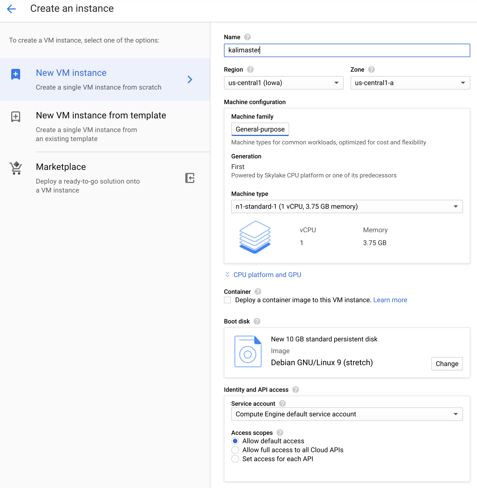
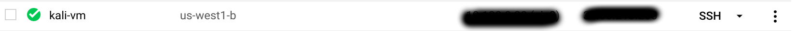
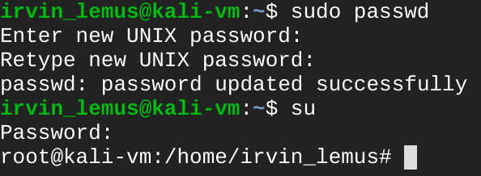

The Bay Area Competitions Program is currently running as a hybrid cloud between NDG's Netlab+ and Google Cloud. In my research, installing Kali Linux to other cloud platforms (Azure has Kali ready to deploy; I have seen scripts to deploy on AWS) is relatively easy. This guide will show how to get Kali Linux running on a GCP image. In order to follow along, you will need an account with GCP already; if not, please follow Sam Bowne's steps before continuing.
Kali runs on Debian, so creating a Debian VM is the easiest part. You can use the standard configuration size. If you are thinking about installing all of Kali Linux's tools, I recommend raising the disk space to at least 20 GB (all of the tools require 6 GB).
Once the image is ready, click on SSH to get a shell.
With the VM ready, we'll make some initial changes, starting with the root user's password; change that to something you know and will use on this system and login as the root user. As always, you should choose a secure password to prevent outsiders from gaining access to this system.
As the root user, we'll make the following changes to the sources.list file:
nano /etc/apt/sources.list
Adding the signature will allow Debian to trust the new repository and download the updates.
wget https://archive.kali.org/archive-key.asc
apt-key add archive-key.asc
Using this page as your guide, you can choose what meta packages to install on your ready VM. In my case, I will install the top 10 tools used in Kali by typing:
apt install kali-linux-top10
You can select any of the various meta packages or install specific tools of your choice to custom build your image. In the prompts that appeared, I did not allow non-superusers to capture packets and did let the install process restart services without asking me.
Have fun hacking on your cloud instance of Kali Linux!